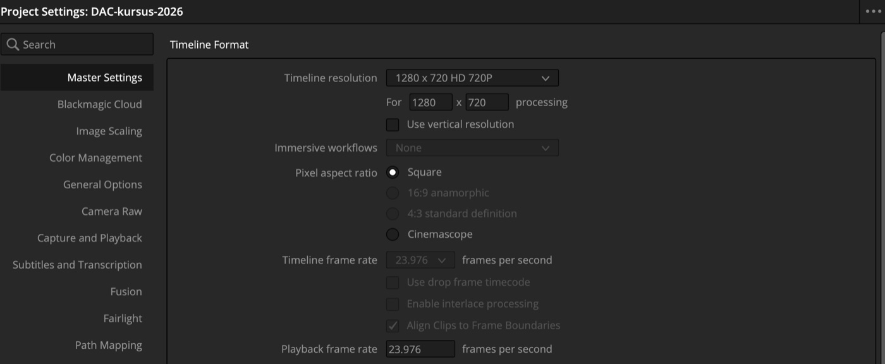
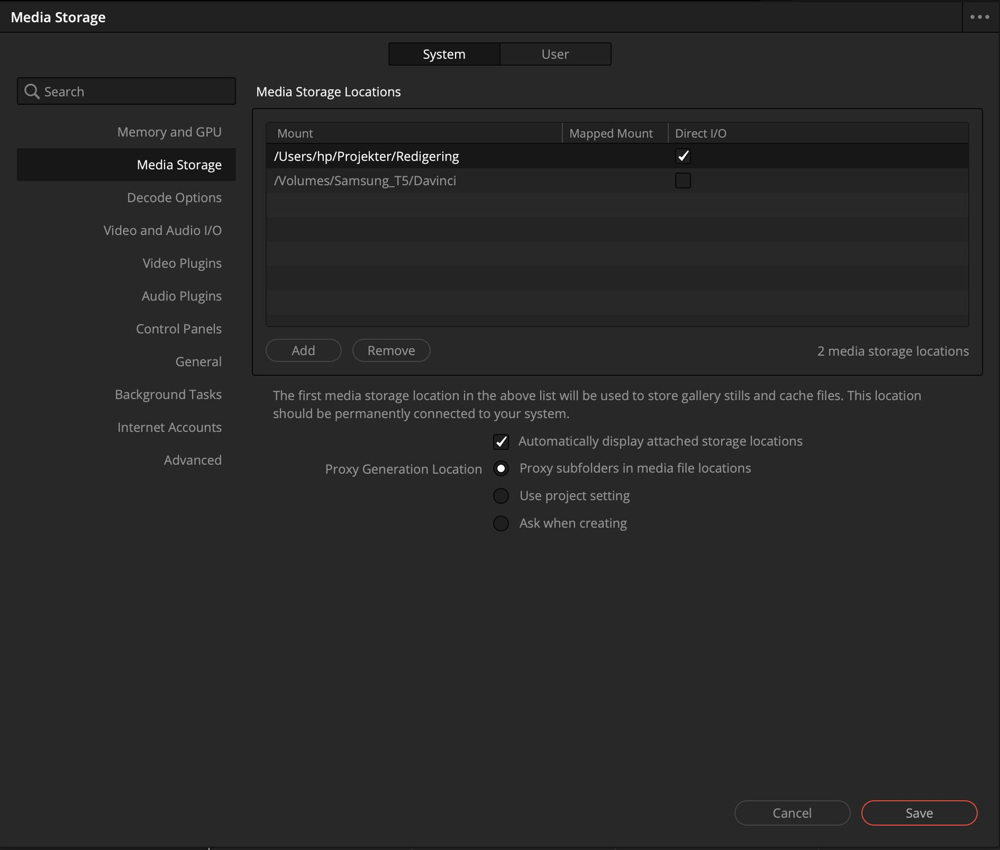
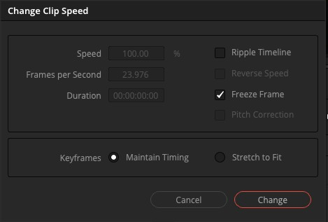
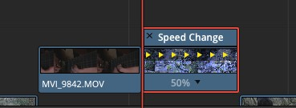
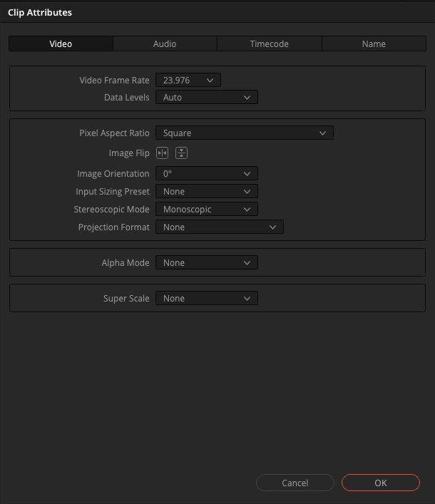
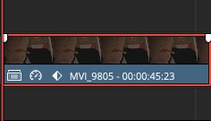

Vejledninger
Videre fra dagens opgaver
Project Settings og billedhastighed Når du laver dit eget projekt fra bunden
Et projekt har en opløsning og en billedhastighed. De to tal beskriver den film, du laver, ikke de klip, du lægger ind. Opløsningen kan rettes bagefter. Billedhastigheden kan ikke: den låser sig, så snart der ligger noget på en timeline.
-
Lad det første klip bestemme
Importerer du det første klip i et tomt projekt, og passer dets billedhastighed ikke med projektets, spørger Resolve, om projektet skal skifte. Sig ja. Så følger projektet det, du har optaget.
-
Eller sæt det selv
Klik på tandhjulet nederst til højre. Under Master Settings står Timeline resolution (fx 1280 x 720 HD, som kursusprojektet bruger) og Timeline frame rate. Klik Save.

Billedhastigheden er grå, fordi den låses, så snart der ligger klip i projektet. -
Tjek, hvor arbejdsfilerne ligger
Preferences (Ctrl/Cmd + ,) → fanen System → Media Storage. Den øverste disk er den, Resolve bruger til midlertidige filer. Det skal være en disk, der altid er tilsluttet.

Til undervisningen
Det er her, eleverne falder i. Bed dem om at optage med samme billedhastighed på telefonen hver gang, og tjek det, før de importerer. Et klip i 30 fps på en timeline i 25 fps hakker, og det er besværligt at rette bagefter.
Dine egne optagelser
Læg dem ikke ind i kursusprojektet. Det er låst til 23,976 fps, og din telefon optager sikkert i 30 eller 60. Lav i stedet et nyt projekt i Project Manager, og importér dit første klip, før du lægger noget på en timeline. Så får projektet samme billedhastighed som dine optagelser.
Retime Controls: slow motion, freeze frame og speed ramps Når et klip skal gå hurtigere, langsommere eller stå stille
-
Speed Change og Freeze Frame
Højreklik på et klip, og vælg Change Clip Speed. Under 100 % giver slow motion, over 100 % hurtigere afspilning. Flueben ved Freeze Frame i samme dialog gør klippet til et stillbillede.


Sådan ser klippet ud, når hastigheden er ændret. -
Clip Attributes
En anden vej til slow motion: højreklik → Clip Attributes → fanen Video. Sæt Video Frame Rate til timelinens hastighed. Er klippet optaget i 60 fps på en timeline i 25, spiller det så automatisk i slow motion.

-
Speed ramps
Højreklik på klippet, og vælg Retime Controls (Ctrl/Cmd + R). Sæt et speed point, hvor farten skal skifte, og træk hastigheden op eller ned på hver side af det. Så kan et klip gå fra normal fart til slow motion midt i et skud.
Hvornår bruger jeg hvilken?
Speed Change, når du selv vil bestemme en procent. Clip Attributes, når klippet allerede er optaget i en høj billedhastighed. Freeze Frame, når billedet skal stå stille. Speed ramps, når farten skal skifte midt i klippet.
Keyframing Når noget skal bevæge sig eller ændre sig over tid
-
Sæt det første keyframe
Vælg et klip, åbn Inspector → Transform, og sæt playheadet ved klippets start. Klik på diamanten ud for Position.
-
Flyt playheadet, og ændr værdien
Flyt playheadet et stykke frem, og ændr Position. Resolve sætter selv et nyt keyframe, og billedet bevæger sig fra den ene position til den anden.

Diamanten på klippet viser, at der er keyframes.
Der sker ikke noget, når jeg ændrer værdien
Står playheadet samme sted som det første keyframe, opdaterer du bare det. Flyt playheadet først.
Genvejene fra dagen står på programsiden.
Videoer
Lær videre på YouTube
Alle på engelsk. Udvalgt af HP.
Hele programmet
- Making Videos in Resolve 21: Full Course for Beginners · Casey Faris. Det lange kursus fra start til slut.
- Ultimate Beginners Tutorial: Media, Edit, Color, Fusion · Team 2 Films. En rolig rundtur i alle siderne.
- Top Timeline Tips & Tricks for Beginners · MrAlexTech
Fusion
- Everything You Need to Start Using Fusion · Casey Faris. Lavet i version 19, men grundprincipperne er de samme.
- 9 Epic DaVinci Resolve Effects in 100 Seconds · Jamie Fenn. Til inspiration.
- How to Do the Invisibility Effect · Jamie Fenn. Ekstraopgaven fra Opgave 4, på hans måde.
Fairlight (lyd)
- Better Audio in DaVinci Resolve for Beginners · Casey Faris. Dialog, mix og musik.
- Get Perfect Audio for YouTube · MrAlexTech
Cut
- The Surprisingly Good Cut Page Features · MrAlexTech
Color
- Resolve's Color Page in Plain Language · Casey Faris
Kanaler
Fire at følge
- Casey Faris. Et meget langt begynderkursus og rigtig mange gode fif.
- MrAlexTech. Stærk i programmet, og han formidler det rigtig godt.
- Team 2 Films. Viser forskellige sider af programmet på en pædagogisk og mindre hypet måde. Mere ro og mere fokus på viden.
- Jamie Fenn. Smarte effekter, når du vil videre.
Til undervisningen
Fif til at undervise elever i Resolve
PDF'en kommer her.